Clustering analysis is popular unsupervised machine learning techniques that categorize data into groups of similarity.
Clustering analysis is one of the important exploratory data analysis you will consider undertaking in order to identify groupings in your dataset. It belongs to the segment of unsupervised classification which draws the data into clusters of similarity. Infact, many classification schemes have this underpinning of classifying a large set of individual elements or observations into a small number of classes. Talk of species classification, the periodic table, development index among others. Remember, it is groups of similarity. This notion also runs in business or rather dominates business decisions. Differential pricing, product and market segmentation among others require identifying the different groups present and tailoring policies that best serve each of them. So clustering analysis is important there!
That being said, there are typically two set of clustering techniques that are use to identify groups of similarity. Namely;
In order to do a little deep dive, we will take them in turns. This tutorial will focus on hierarchical clustering where a tree structure is produce for the clusters – dendrograms.
Hierarchical clustering is of two types; agglomerative nesting and divisive analysis. The two are oppose in terms of where formation of clusters begin from.
Agglomerative Nesting (AGNES) merges similar clusters beginning from the bottom-most, into nodes and in a sequential manner continue merging them until all clusters form a single root at the top of the tree.
Divisive clustering also known as DIANA (Divise Analysis) runs in opposite direction to AGNES. The algorithm starts by disaggregating the root cluster, which is the single cluster containing all other clusters, into dissimilar clusters at each step (with each cluster being internally similar) until all the dissimilarity between clusters are completely exhausted. Thus, it ends with the leafs, which are clusters at the bottom, entirely dissimilar to each other.
So AGNES adds up similar cluster leafs to form a cluster node and then a root while DIANA divides a single cluster root into dissimilar cluster nodes and then finally cluster leafs. Thus, AGNES is favoured for finding small clusters while DIANA works well for large clusters.
In order to undertake hierarchical clustering, the data has to be cleaned and prepared for that purpose such that variables are comparable. This involve the following;
In measuring dissimilarity between clusters, different methods can be use and are required to be specified when using AGNES. The methods are identified as follows;
Maximum / complete linkage: uses the highest dissimilarity found between clusters after pairwise calculation of dissimilarities of elements in different clusters.
Minimum / single linkage: uses the least dissimilarity between clusters following similar method as complete linkage in calculating dissimilarity
Mean / average linkage: as the name suggests, uses average dissimilarity as distance between clusters after computing pairwise dissimilarity between observations in different clusters.
Centroid linkage: based on the dissimilarity between the centroid of clusters.
Ward’s minimum variance: focuses on minimizing inward cluster difference by merging groups with least between-cluster distance.
The best way to understand the workflow and methods identified for computing hierarchical clustering is by practicing with a project. We are going to define a simple research that clustering analysis can be used for and go through the complete pipeline required to execute it.
So let’s take a break from the long discussion and start with practicals.
The dataset to be used for this tutorial is Living Standard Measurement Study (LSMS) for Nigeria. Specifically, we will use the General Household Survey, 2015-2016 Panel data which is the Wave 3. The dataset can be accessed from (https://microdata.worldbank.org/index.php/catalog/2734/related-materials).
As part of most data science projects in the real world, background checks has to be done even before data exploration and analysis. We have covered our first step which is accessing the data. The data can even be provided to us by our client or project partner or whoever we are working for. But one thing that we will have to do ourselves is to familiarize ourselves with variable names used, questionnaire administered and its design, how data was collected, units of measurement for the various variables among several others. Understanding these elements will influence how we explore the data, organize it in terms of merging datasets and variables, and analyze it.
To do this for our dataset, we need to look at the documentation of the dataset which is also available on the site (https://microdata.worldbank.org/index.php/catalog/2734/data-dictionary).
After familiarizing ourselves with the metadata files, it is clear that the variables we want to analyze are in two different files namely sect8b_plantingw3.csv (contains expenditure on various fuels including kerosene and petrol among others) and sect8c_plantingw3.csv (contains expenditure on health). The dataset create opportunity for us to learn key skills of data wrangling and transformation before the actual clustering analysis. This is typical of many projects.
Now that we know the tasks we will be undertaking, we have to install (if not already installed) and load the libraries needed
## install librabries if not already available
### I have commented the code for installation because I have already installed them
# install.packages("tidyverse")
# install.packages("cluster")
# install.packages("factoextra")
# install.packages("dendextend")
# install.packages("DT")
# install.packages("skimr")
# install.packages("dplyr")
# install.packages("dendextend")
# install.packages("ape")
## load librabries
library(readr) ## to read csv file
library(tidyverse) ## to tidy the data
library(cluster) ## for cluster analysis
library(factoextra) ## to visualize clusters
library(dendextend) ## to compare dendrograms
library(stats) ## for statistical analysis
library(DT) ## to present beautiful tables
library(skimr) ## for quick descriptive view of the dataset
library(ape) ## to visualize dendrogramsThe first thing to do is to import the dataset (hopefully you have downloaded them) and get a general understanding of it. This can be achieve with the code below
fuel_expenditure <- read_csv("sect8b_plantingw3.csv") ## load the dataset
health_expenditure <- read_csv("sect8c_plantingw3.csv") ## load the dataset
skim(fuel_expenditure) ## get data summary| Name | fuel_expenditure |
| Number of rows | 137729 |
| Number of columns | 10 |
| _______________________ | |
| Column type frequency: | |
| character | 1 |
| numeric | 9 |
| ________________________ | |
| Group variables | None |
Variable type: character
| skim_variable | n_missing | complete_rate | min | max | empty | n_unique | whitespace |
|---|---|---|---|---|---|---|---|
| item_desc | 0 | 1 | 3 | 30 | 0 | 30 | 0 |
Variable type: numeric
| skim_variable | n_missing | complete_rate | mean | sd | p0 | p25 | p50 | p75 | p100 | hist |
|---|---|---|---|---|---|---|---|---|---|---|
| zone | 0 | 1.00 | 3.52 | 1.71 | 1 | 2 | 3 | 5 | 6 | ▇▅▅▅▅ |
| state | 0 | 1.00 | 18.57 | 10.36 | 1 | 10 | 19 | 28 | 37 | ▇▆▇▇▇ |
| lga | 0 | 1.00 | 1868.92 | 1035.81 | 102 | 1001 | 1921 | 2806 | 3706 | ▇▆▇▇▇ |
| sector | 0 | 1.00 | 1.68 | 0.47 | 1 | 1 | 2 | 2 | 2 | ▃▁▁▁▇ |
| ea | 0 | 1.00 | 993.11 | 932.12 | 0 | 330 | 760 | 1390 | 7586 | ▇▂▁▁▁ |
| hhid | 0 | 1.00 | 185571.19 | 103683.68 | 10001 | 90124 | 190093 | 280038 | 370040 | ▇▆▇▇▇ |
| item_cd | 0 | 1.00 | 315.50 | 8.66 | 301 | 308 | 315 | 323 | 330 | ▇▇▇▇▇ |
| s8q3 | 2 | 1.00 | 1.82 | 0.39 | 1 | 2 | 2 | 2 | 2 | ▂▁▁▁▇ |
| s8q4 | 112727 | 0.18 | 1911.06 | 43304.31 | 2 | 250 | 600 | 1500 | 6584185 | ▇▁▁▁▁ |
skim(health_expenditure) ## get data summary| Name | health_expenditure |
| Number of rows | 188230 |
| Number of columns | 10 |
| _______________________ | |
| Column type frequency: | |
| character | 1 |
| numeric | 9 |
| ________________________ | |
| Group variables | None |
Variable type: character
| skim_variable | n_missing | complete_rate | min | max | empty | n_unique | whitespace |
|---|---|---|---|---|---|---|---|
| item_desc | 0 | 1 | 6 | 30 | 0 | 41 | 0 |
Variable type: numeric
| skim_variable | n_missing | complete_rate | mean | sd | p0 | p25 | p50 | p75 | p100 | hist |
|---|---|---|---|---|---|---|---|---|---|---|
| zone | 0 | 1.00 | 3.52 | 1.71 | 1 | 2 | 3 | 5 | 6 | ▇▅▅▅▅ |
| state | 0 | 1.00 | 18.57 | 10.36 | 1 | 10 | 19 | 28 | 37 | ▇▆▇▇▇ |
| lga | 0 | 1.00 | 1868.92 | 1035.80 | 102 | 1001 | 1921 | 2806 | 3706 | ▇▆▇▇▇ |
| sector | 0 | 1.00 | 1.68 | 0.47 | 1 | 1 | 2 | 2 | 2 | ▃▁▁▁▇ |
| ea | 0 | 1.00 | 993.11 | 932.12 | 0 | 330 | 760 | 1390 | 7586 | ▇▂▁▁▁ |
| hhid | 0 | 1.00 | 185571.20 | 103683.48 | 10001 | 90124 | 190093 | 280038 | 370040 | ▇▆▇▇▇ |
| item_cd | 0 | 1.00 | 421.00 | 11.83 | 401 | 411 | 421 | 431 | 441 | ▇▇▇▇▇ |
| s8q5 | 0 | 1.00 | 1.84 | 0.36 | 1 | 2 | 2 | 2 | 2 | ▂▁▁▁▇ |
| s8q6 | 158505 | 0.16 | 2822.90 | 6896.99 | 1 | 580 | 1500 | 3000 | 300000 | ▇▁▁▁▁ |
The skim() function gives us an overview of the dataset. It shows that there are 10 columns in both the fuel_expenditure and health_expenditure data objects. Among others, it gives the mean and number of missing cases for each variable. Depending on the type of variable, that is whether character or numeric, we get different type of summary. Some of the variables are not in their right data type format. Example, zone, state and lga are numeric instead of being character but that is not the focus here. The variable s8q4 from fuel_expenditure data object has 112727 missing records.
We keep saying the variable and that brings up the question, what does the variable actually mean? This is where our earlier exercise of viewing the metadata plays its role. If we indeed went through the various documentations and questionnaire that comes with the data, we will realize that variable s8q4 (fuel_expenditure data) represents household monthly expenditure measured in Naire for various items identified in item_desc variable. Likewise, s8q6 (health_expenditure data) represents expenditure for items but this time round it covers 6 month duration.
Our dataset is quite large to be viewed in a table nicely and adequately; so we will subset the first 100 rows (remember rows are individual records or observations) and show them in an interactive table using the datatable() function from DT package.
datatable(fuel_expenditure[1:100, ]) ## view the first 100 observations in fuel_expenditure dataThe fuel_expenditure table above shows that we have more variables than needed for our analysis as we are only interested in Petrol and Kerosene captured in the item_desc variable. Moreover, the variable names are not understandable. So just by viewing the table, we will realize that some data wrangling tasks await us. The same can be said for the health_expenditure data object.
Let’s view the first 100 rows of health_expenditure data.
datatable(health_expenditure[1:100, ]) ## view the health_expenditure data We have imported and viewed our dataset successfully and now we have to clean, and transform our data to the required format for analysis. Data wrangling and transformation activities are not a cast in a stone despite some activities are very common. The type and structure of dataset and analysis we want to perform determines what we need to do.
Looking at our dataset, we need to reduce it to only columns that we are interested in, add some new columns with transformed data and clean out the missing data. We will be utilizing piping approach (%>%) to harness its benefit of logical and clear flow of analysis. This can be achieve with the code below for fuel_expenditure.
Now, we have reduced the data to only variables needed. Yet, it is obvious there is still work to be done. First of all, the varaible “state” has meaningless numbers instead of names of states in Nigeria. This was useful for data collection and data entry but not our analysis where audience have to know state names explicitely. How do we know exactly what these numbers represent? Again, this is where our metadata exploration comes to our rescue. When we reviewed the documentation that came with the data, we realized that under “state code”, the corresponding state names are provided. With this, we can add a new column that has the corresponding state names.
Another issue to note, which also influences how to transform our data is that, the number of observations recorded for each state varies. This has to do with the sampling technique used during data collection in order to achieve good representativeness. We want to make sure that, the states are comparable in terms of expenditure. So instead of summarizing base on the total expenditure for each state, we will do so based on the mean. With that, we will see mean expenditure of state and not sum of households. In order to captured this as our labeling when we do the clustering analysis, we will convert the column of state names to row names.
Now, let’s code all that we have discussed so far.
fuel_expenditure_transformed <- fuel_expenditure_transformed %>%
dplyr::mutate(state_names = case_when( ## add a new column containing state names
state == 1 ~ "Abia",
state == 2 ~ "Adamawa",
state == 3 ~ "Akwa Ibom",
state == 4 ~ "Anambra",
state == 5 ~ "Bauchi",
state == 6 ~ "Bayelsa",
state == 7 ~ "Benue",
state == 8 ~ "Borno",
state == 9 ~ "Cross River",
state == 10 ~ "Delta",
state == 11 ~ "Ebonyi",
state == 12 ~ "Edo",
state == 13 ~ "Ekiti",
state == 14 ~ "Enugu",
state == 15 ~ "Gombe",
state == 16 ~ "Imo",
state == 17 ~ "Jigawa",
state == 18 ~ "Kaduna",
state == 19 ~ "Kano",
state == 20 ~ "Katsina",
state == 21 ~ "Kebbi",
state ==22 ~ "Kogi",
state == 23 ~ "Kwara",
state == 24 ~ "Lagos",
state == 25 ~ "Nasarawa",
state == 26 ~ "Niger",
state == 27 ~ "Ogun",
state == 28 ~ "Ondo",
state == 29 ~ "Osun",
state == 30 ~ "Oyo",
state == 31 ~ "Plateau",
state == 32 ~ "Rivers",
state == 33 ~ "Sokoto",
state == 34 ~ "Taraba",
state == 35 ~ "Yobe",
state == 36 ~ "Zamfara",
state == 37 ~ "FCT Abuja")
) %>%
tidyr::pivot_wider(names_from = item_desc, values_from = s8q4, values_fn = mean)
datatable(fuel_expenditure_transformed)After cleaning and transforming fuel_expenditure data, we need to make sure that the second data is also transform to be at the same quality level or format. Remember that health_expenditure is for 6 months which means that in order to analyze both data properly for the same time scale, we need to convert it to monthly data and then calculate the mean.
The code to transform health expenditure data to required format is below;
health_expenditure_transformed <- health_expenditure %>%
dplyr::select(state, item_desc, s8q6)%>%
dplyr::filter(item_desc %in% "HEALTH EXPENDITURES (EXCLUDING") %>%
na.omit() %>%
dplyr::mutate(state_names = case_when(
state == 1 ~ "Abia",
state == 2 ~ "Adamawa",
state == 3 ~ "Akwa Ibom",
state == 4 ~ "Anambra",
state == 5 ~ "Bauchi",
state == 6 ~ "Bayelsa",
state == 7 ~ "Benue",
state == 8 ~ "Borno",
state == 9 ~ "Cross River",
state == 10 ~ "Delta",
state == 11 ~ "Ebonyi",
state == 12 ~ "Edo",
state == 13 ~ "Ekiti",
state == 14 ~ "Enugu",
state == 15 ~ "Gombe",
state == 16 ~ "Imo",
state == 17 ~ "Jigawa",
state == 18 ~ "Kaduna",
state == 19 ~ "Kano",
state == 20 ~ "Katsina",
state == 21 ~ "Kebbi",
state ==22 ~ "Kogi",
state == 23 ~ "Kwara",
state == 24 ~ "Lagos",
state == 25 ~ "Nasarawa",
state == 26 ~ "Niger",
state == 27 ~ "Ogun",
state == 28 ~ "Ondo",
state == 29 ~ "Osun",
state == 30 ~ "Oyo",
state == 31 ~ "Plateau",
state == 32 ~ "Rivers",
state == 33 ~ "Sokoto",
state == 34 ~ "Taraba",
state == 35 ~ "Yobe",
state == 36 ~ "Zamfara",
state == 37 ~ "FCT Abuja")
) %>%
dplyr::group_by(state_names)
health_expenditure_transformed <- dplyr::summarize(health_expenditure_transformed, Monthly_mean_health_expenditure = mean(s8q6/6))
datatable(health_expenditure_transformed)Now, we have transformed both datasets and we need to verify if they are equal in terms of number of rows and columns before joining together for further analysis.
We will realize that the number of rows are different for fuel_expenditure_transformed (37) and health_expenditure_transformed (36). This is a common occurrence in data exploration and preparation. There is a state without data in health_expenditure_transformed. If we are to inspect the data, we will realize that there is no record for Jigawa state. This is an instance where we face the decision of either employing a data imputation method to provide values for Jigasaw or leaving it out altogether. We will tackle data imputation in a different post. For now, the better choice will be to leave Jigawa state out of the analysis. So we will remove the row for Jigawa state in fuel_expenditure_transformed in order to have 36 rows for both datasets and join them together. Then, we will convert the column “state_names” to row names for labeling the cluster leafs to be more meaningful. The code to achieve that is as follows;
dataset_all <- subset.data.frame(fuel_expenditure_transformed, fuel_expenditure_transformed$state != 17) %>%
dplyr::left_join(health_expenditure_transformed) %>% ## join the two datasets
tibble::column_to_rownames(var = "state_names") %>% ## transform variable state_names to rownames
select(-1) ## select all columns except the first one (state) which we don't need again
datatable(dataset_all)Now our data is ready for analysis!. But before then, we have to do clustering relevant data preparation
The data preparation done at this stage is not one that we will do for all types of analysis. We are doing them in order to successfully undertake a clustering analysis that is appropriate.
Data standardization: Before applying various clustering algorithms, we need to standardize the data to have mean zero and standard deviation one. This is done to make our variables have a common scale hence comparable.
Computation of dissimilarity measure: This is done to identify observations that belong to the same clusters.
Now, let’s write our code for that;
We will use all the clustering methods we have discussed above and compare the results.
Agglomerative nesting can be undertaken using hclust(), flashClust or agnes()
## hierarchical clustering wtih complete linkage
hcl_complete<- hclust(dataset_dissimilarity, method = "complete")
plot(hcl_complete, cex = 0.6, hang = -1) 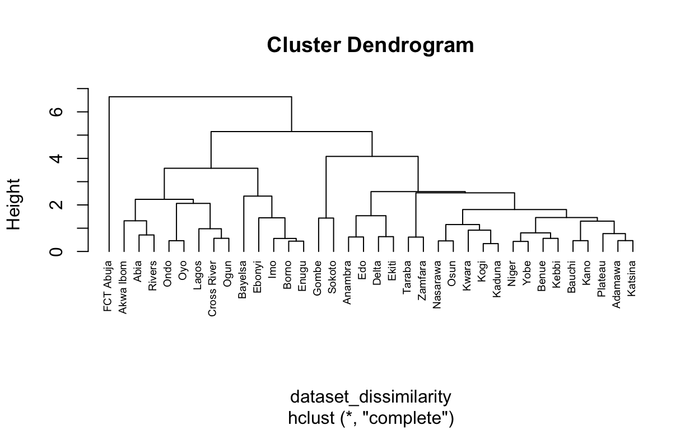
Using agnes() function gives us the agglomerative co-efficient (ac) which measures the strength of clustering. The higher the ac, the stronger the clustering structure.
## agnes clustering
agnes_complete <- agnes(dataset_dissimilarity, method = "complete")
plot(agnes_complete)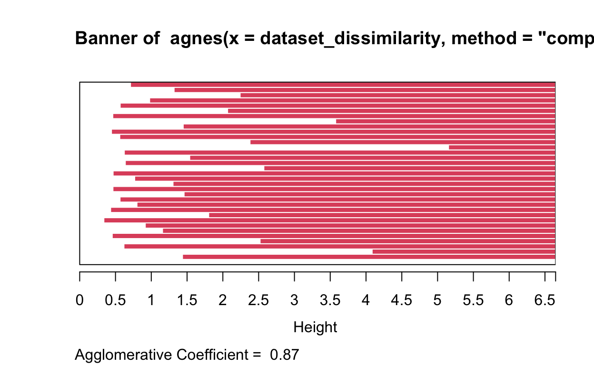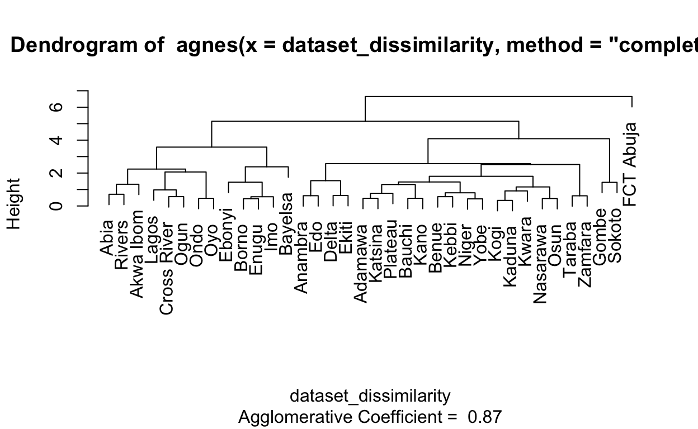
Now, let’s look at other methods we have discussed for AGNES.
## compute agnes clustering with various methods
agnes_single <- agnes(dataset_dissimilarity, method = "single")
agnes_average <- agnes(dataset_dissimilarity, method = "average")
agnes_ward <- agnes(dataset_dissimilarity, method = "ward")
#Plot results
plot(agnes_single)plot(agnes_average)plot(agnes_ward)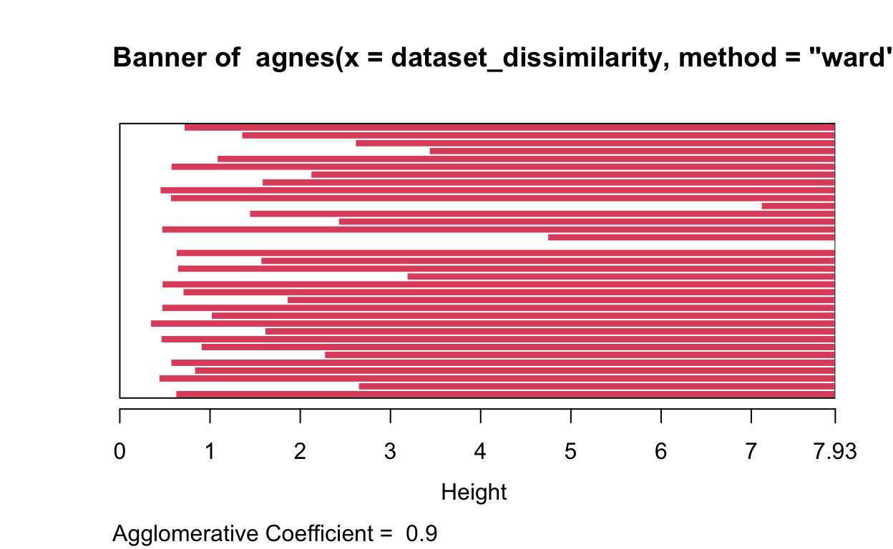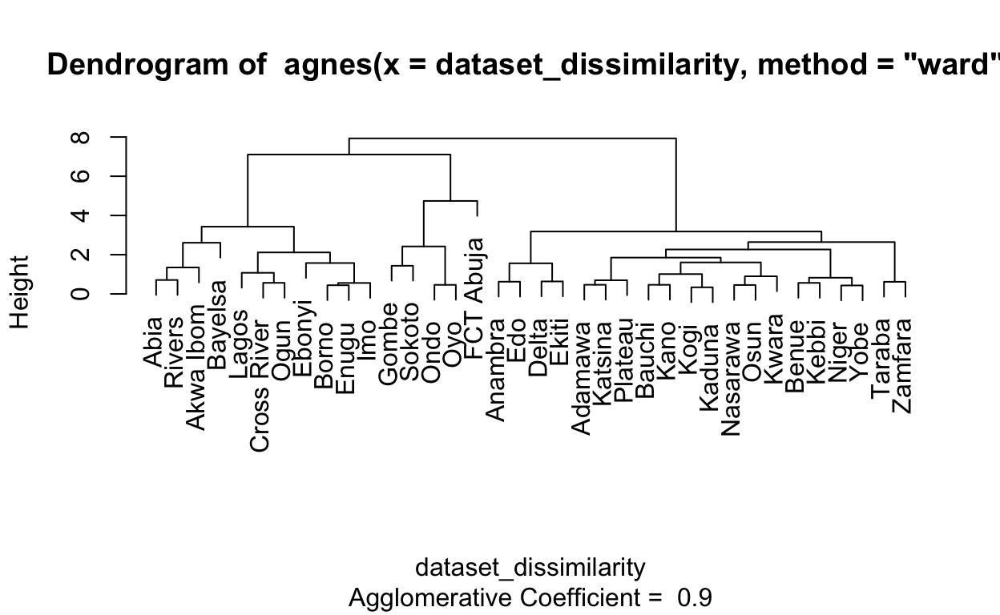
From the various methods, agnes with the ward method produces an ac of 0.9 which is the highest compared to others hence depicts the strongest structure.
Before we draw the curtains down on agnes, let’s also note that hcluster() function also accepts other methods
hclust_mcquitty <- hclust(dataset_dissimilarity, method = "mcquitty")
hclust_median <- hclust(dataset_dissimilarity, method = "median")
hclust_centriod <- hclust(dataset_dissimilarity, method = "centroid")
plot(hclust_mcquitty, cex = 0.6, hang = -1)plot(hclust_median, cex = 0.6, hang = -1)plot(hclust_centriod, cex = 0.6, hang = -1)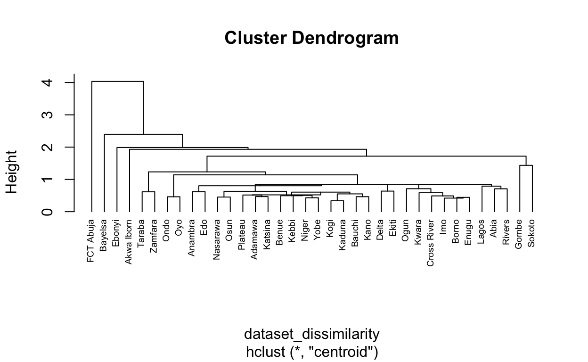
Divisive clustering does not require a method argument to be specified. let’s analyze the data using diana() function.
#### divisive clustering
# computes divisive hierarchical clustering
divisive_cluster <- cluster::diana(dataset_dissimilarity)
# divisive coefficient -- amount of clustering structure found
divisive_cluster$dc[1] 0.8510366#plot dendrogram for divisive clustering
pltree(divisive_cluster, cex = 0.6, hang = .2, main = "Dendrogram of diana")divisive_cluster$dc[1] 0.8510366The divisive co-efficient (dc) is computed to be 0.85 which indicates strong clustering structure. The ac and dc are measured on a scale of 0 to 1 with lower values close to 0 indicating weak clustering and higher values close to 1 indicating strong cluster structure.
We can identify observations that falls into similar groups or otherwise by stating the number of groups we want to cut into. let’s cut our observations into 5 clusters with the code below. This can be done for both agnes and divise
# CUT TREE INTO 5 GROUPS
hcl_complete_group <- cutree(hcl_complete, k = 5)
### Number of members in each cluster
table(hcl_complete_group)hcl_complete_group
1 2 3 4 5
8 20 5 2 1 We can visualize how the various states are grouped when we cut into 5 clusters using the code below
## visualize with fviz_cluster
fviz_cluster(list(data = dataset_all_scaled, cluster = hcl_complete_group))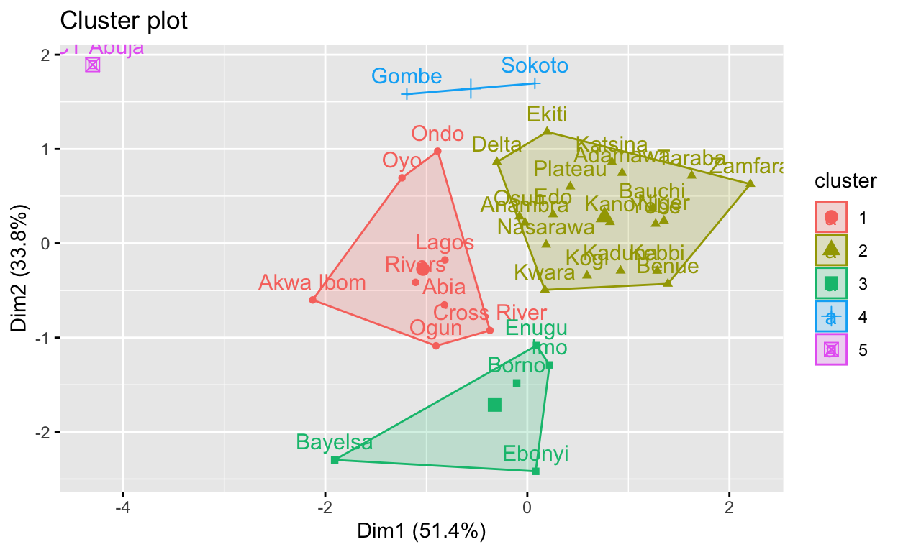
We can compare clustering based on different methods by creating dendrogram objects for them and plotting.
### create dendrogram object
agnes_complete_dendrogram <- as.dendrogram(agnes_complete)
agnes_ward_dendrogram <- as.dendrogram(agnes_ward)
### plot the dendrograms to compare and match
tanglegram(agnes_complete_dendrogram, agnes_ward_dendrogram)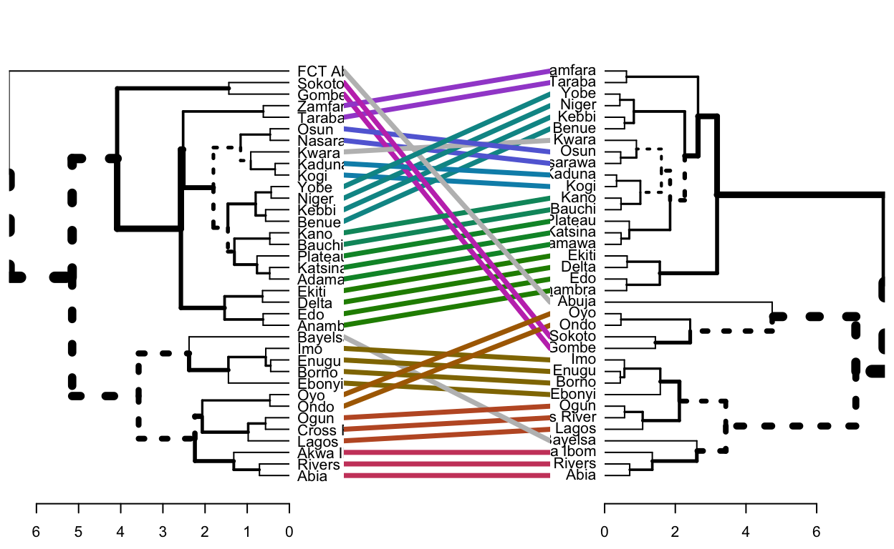
The dashed lines show cluster combinations different from others.
Visualizing results has never been less important for cluster analysis where observations are grouped and there is the need for more colourful differentiation of groups to better understand the results presented. There are options for this. First, we can chain multiple dendrograms together to customize them easily.
# create a dendlist
dend_list_agnes_complete_ward <- dendlist(agnes_complete_dendrogram, agnes_ward_dendrogram)
tanglegram(dend1 = agnes_complete_dendrogram, dend2 = agnes_ward_dendrogram,
highlight_distinct_edges = TRUE, # Turn off dashed lines
common_subtrees_color_lines = TRUE, # turn-off line colors
common_subtrees_color_branches = TRUE, # color common branches
highlight_branches_col = TRUE,
main_left = "Agglomerative Nesting (complete method)",
main_right = "Agglomerative Nesting (ward method)",
sub = "Expenditure on Petrol, Kerosene and Health -States in Nigeria",
cex_main_left = 1.1,
cex_main = 0.8,
cex_sub = .6,
lab.cex = 1,
margin_inner = 5,
main = paste("Entanglement = ", round(entanglement(dend_list_agnes_complete_ward), 2)))agnes_complete_dendrogram'dendrogram' with 2 branches and 36 members total, at height 6.648864 We have added entanglement co-efficient to the graph. It measures how well-align the trees are on a scale of 0 to 1. The low co-oefficient of 0.17 indicates low entanglement with good alignment.
A number of methods can be used to determine the optimal number of clusters for grouping
To determine optimal number of clusters with elbow method, we need to look at where the bend is located which can be gauged to be 3 from our analysis below
fviz_nbclust(dataset_all_scaled, FUN = hcut, method = "wss")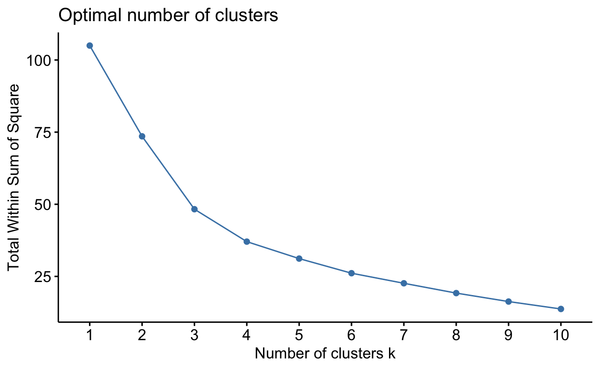
Average silhouette method indicates how well the clusters form with within cluster difference minimized at the optimal cluster number. Thus, the highest average silhouette width corresponds to the optimal number of clusters.
fviz_nbclust(dataset_all_scaled, FUN = hcut, method = "silhouette")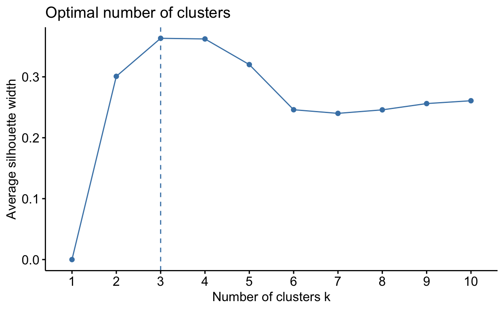
From the plot above, the optimal number of clusters is 3.
dataset_gapstat <- clusGap(dataset_all_scaled, FUN = hcut, K.max = 10)
fviz_gap_stat(dataset_gapstat)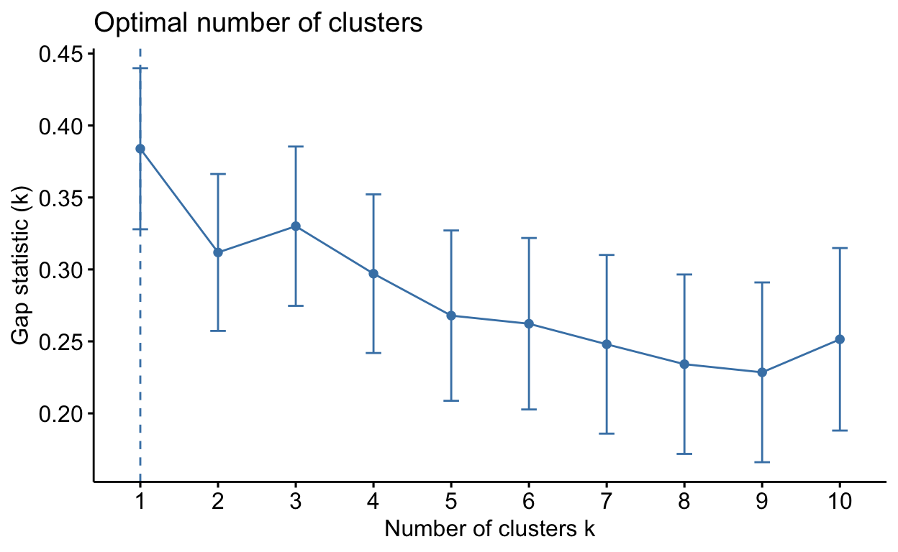
The gaps method identified 1 to be the optimal number of clusters within a range of 1 to 10 clusters. Well, as we can deduce, different methods can identify different number of optimal clusters. With 2 of the methods suggesting 3 to be the optimal number of clusters, we can go by that.
Now that we know the optimal number of clusters, let’s use that to visualize the data but in a way different from the previous.
# Cut the dendrogram into 4 clusters
colors = c("brown", "orange", "#1DEfbb", "yellow")
ward_cut <- cutree(hcl_complete, k = 3)
plot(as.phylo(hcl_complete), type = "fan", tip.color = colors[ward_cut], label.offset = .5, cex = 0.7, no.margin = TRUE, use.edge.length = TRUE)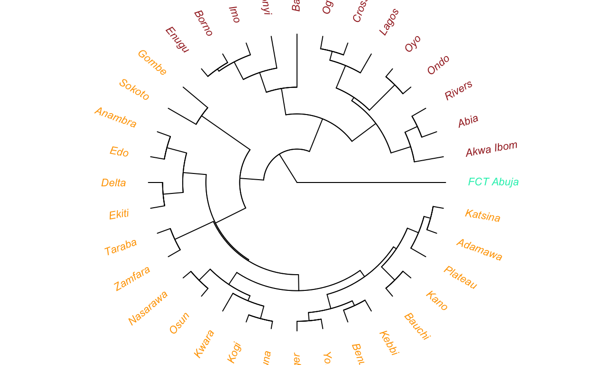
With this simple exercise, we learnt how to undertake hierarchical clustering analysis using a project that is typical of the real world. We went through process of data wrangling and transformation, clustering and determining the optimal number of clusters.